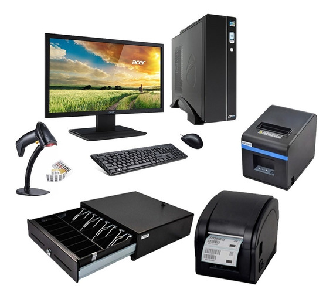
Un chipset (traducido como circuito integrado auxiliar) es el conjunto de circuitos integrados diseñados con
base en la arquitectura de un procesador (en algunos casos, diseñados como parte integral de esa
arquitectura), permitiendo que ese tipo de procesadores funcionen en una placa base. Sirven de puente de
comunicación con el resto de componentes de la placa, como son la memoria, las tarjetas de expansión, los
puertos USB, ratón, teclado, etc.
El Chipset es el que hace posible que la placa base funcione como eje del sistema, dando soporte a varios
componentes e interconectándolos de forma que se comuniquen entre ellos haciendo uso de diversos buses. Es
uno de los pocos elementos que tiene conexión directa con el procesador, gestiona la mayor parte de la
información que entra y sale por el bus principal del procesador, del sistema de vídeo y muchas veces de la
memoria RAM.
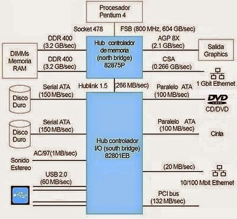
CPU o procesador, interpreta y lleva a cabo las instrucciones de los programas, efectúa manipulaciones aritméticas y lógicas con los datos y se comunica con las demás partes del sistema. Una UCP es una colección compleja de circuitos electrónicos. Cuando se incorporan todos estos circuitos en un chip de silicio, a este chip se le denomina microprocesador. La CPU y otros chips y componentes electrónicos se ubican en un tablero de circuitos o tarjeta madre.
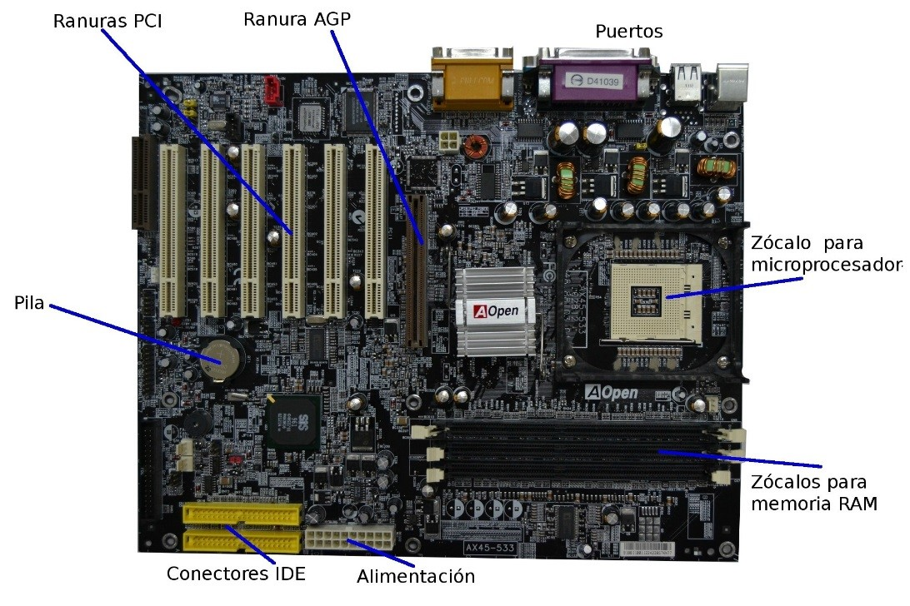
El Bus es la vía a través de la que se van a transmitir y recibir todas las comunicaciones, tanto internas
como externas, del sistema informático. El bus es solamente un Dispositivo de Transferencia de Información
entre los componentes conectados a él, no almacena información alguna en ningún momento. Los datos, en forma
de señal eléctrica, sólo permanecen en el bus el tiempo que necesitan en recorrer la distancia entre los dos
componentes implicados en la transferencia.
El controlador del bus se encarga de la frecuencia de funcionamiento y las señales de sincronismo,
temporización y control.
Está ubicado en un chip en la placa base.
Un módulo de E/S es un controlador de uno o varios periféricos que
establece una interfaz entre el periférico y el computador (procesador y
memoria) para facilitar la comunicación entre el uno y el otro de manera
que buena parte de los detalles técnicos del periférico queden ocultos
al resto del computador.
Del módulo de E/S distinguimos tres partes básicas:
1) Una interfaz interna normalizada con el resto del computador mediante el
bus de sistema que nos da acceso al banco de registros del módulo de E/S.
2) Una interfaz externa específica para el periférico que controla. Habitualmente la conexión con el
periférico se realiza mediante un sistema de interconexión normalizado de E/S.
3) La lógica necesaria para gestionar el módulo de E/S. Es responsable del paso
de información entre la interfaz interna y externa.
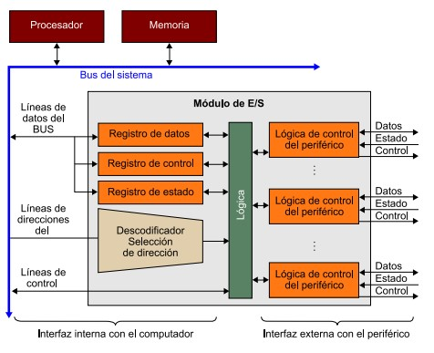
El controlador de interrupciones es un módulo que tiene por función gestionar las interrupciones de entrada/salida para el procesador. Esto ahorra diseñar lógica y añadir patitas al procesador. También proporciona flexibilidad porque permite idealmente, gestionar un número ilimitado señales de interrupción (favoreciendo la expansión del sistema de entrada salida). El controlador recibe el conjunto de señales de interrupción procedentes de los dispositivos, toma la decisión de cual es la más prioritaria, y envía una única señal al procesador. La respuesta del procesador es transmitida al dispositivo y el propio controlador se encarga de depositar en el bus el vector de la interrupción.
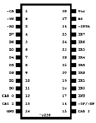
El acceso directo a memoria (DMA, del inglés direct memory access) permite a cierto tipo de componentes de
una computadora acceder a la memoria del sistema para leer o escribir independientemente de la unidad
central de procesamiento (CPU). Muchos sistemas hardware utilizan DMA, incluyendo controladores de unidades
de disco, tarjetas gráficas y tarjetas de sonido. DMA es una característica esencial en todos los
ordenadores modernos, ya que permite a dispositivos de diferentes velocidades comunicarse sin someter a la
CPU a una carga masiva de interrupciones.
Una transferencia DMA consiste principalmente en copiar un bloque de memoria de un dispositivo a otro. En
lugar de que la CPU inicie la transferencia, la transferencia se lleva a cabo por el controlador DMA. Un
ejemplo típico es mover un bloque de memoria desde una memoria externa a una interna más rápida. Tal
operación no ocupa al procesador y, por ende, éste puede efectuar otras tareas. Las transferencias DMA son
esenciales para aumentar el rendimiento de aplicaciones que requieran muchos recursos.
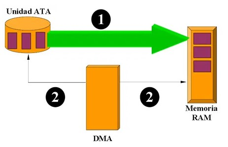
El temporizador es un circuito digital, dispone de dos salidas al igual que un flip flop, una salida es la inversa de la otra, a diferencia del flip flop quién cuenta con dos estados estables, el temporizador solamente posee un estado estable, el otro estado es inestable, permanece en su estado estable, hasta que se activa con un pulso de entrada, una vez que se activa cambia a su estado inestable y ahí permanece por un periodo fijo de tiempo tw , este tiempo lo determina una constante de tiempo RC externa que se conecta al temporizador, después de que transcurre el tiempo tw , las salidas dos salidas del temporizador regresan a su estado estable, hasta que se activan otra vez. La finalidad de la temporización es retardar el paso de una señal desde un nodo del circuito hasta otro punto, el diseño de este circuito se realiza con un dispositivo que se conoce con el nombre de “monoestable” ó “temporizador”, éste elemento electrónico dispone de una entrada “E” y una salida “S”, se tienen tres temporizadores básicos que se denominan; el primero, temporización a la activación, el segundo se llama temporización a la desactivación y el tercero es una combinación de las dos anteriores, temporización a la “activación y desactivación” simultaneas. Se dispone de dos tipos de comportamiento en que se manifiestan las salidas de los temporizadores, "redisparables" y "no redisparables" y su entrada responde a dos tipos de disparo, "activación" y "desactivación"
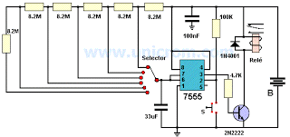
Es una red secuencial que acepta un código que define la operación que se va a ejecutar y luego prosigue a través de una secuencia de estados, generando una correspondiente secuencia de señales de control. Estas señales de control incluyen el control de lectura ‑ escritura y señales de dirección de memoria válida en el bus de control del sistema. Otras señales generadas por el controlador se conectan a la unidad aritmética ‑ lógica y a los registros internos del procesador para regular el flujo de información en el procesador y a, y desde, los buses de dirección y de datos del sistema.
Un controlador de vídeo o VDC es un circuito integrado que es el principal componente de un generador de
señal de vídeo, un dispositivo encargado de la producción de una señal de vídeo en informática o un sistema
de juego. Algunos de Desarrollo de Aldea también generar una buena señal, pero en ese caso no es su función
principal.
La mayoría de los CDA se utilizan a menudo en la antigua casa-ordenadores de los años 80, sino también en
algunos de los primeros sistemas de video juego.
El VDC siempre es el principal componente de la señal de vídeo generador de la lógica, pero a veces también
hay otros chips utilizados, tales como RAM para celebrar el píxel de datos, para celebrar ROM carácter
fuentes, o quizás algunos discretos lógica, como los registros
de cambio eran necesarias para construir un sistema completo. En cualquier caso, es el VDC de la
responsabilidad de generar el calendario de las necesarias señales de vídeo, tales como la horizontal y
vertical de sincronización de señales, y el intervalo de corte de señal.
La mayoría de las veces el chip VDC está completamente integrado en la lógica de la computadora principal
del sistema, (su memoria RAM de vídeo aparece en el mapa de memoria principal de la CPU), pero a veces
funciona como un co procesador que puede manipular el contenido de RAM de vídeo independientemente de la el
procesador principal.
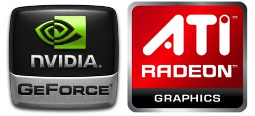
Las computadoras electrónicas modernas son una herramienta esencial en muchas áreas: industria, gobierno,
ciencia, educación,…, en realidad en casi todos los campos de nuestras vidas.
El papel que juegan los dispositivos periféricos de la computadora es esencial; sin tales dispositivos ésta
no
sería totalmente útil. A través de los dispositivos periféricos podemos introducir a la computadora datos
que
nos sea útiles para la resolución de algún problema y por consiguiente obtener el resultado de dichas
operaciones, es decir; poder comunicarnos con la computadora.
La computadora necesita de entradas para poder generar salidas y éstas se dan a través de dos tipos de
dispositivos periféricos existentes:
• Dispositivos periféricos de entrada.
• Dispositivos periféricos de salida.
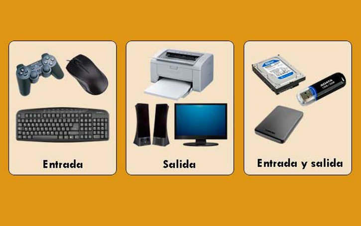
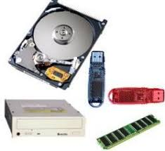
Fuentes de almacenamiento configuradas
La serie MVP es la familia más versátil de fuentes de alimentación de potencia media que utiliza componentes
magnéticos de SMD y convertidos DC-DC internos, combinados con módulos PFC, que pueden ser configurables
desde 1 hasta 10 tensiones de salida con valores entre 2 y 60 v. tiene todas las
homologaciones de seguridad necesarias y es un producto marcado “CE”.
Fuentes de alimentación de baja potencia
Las series LP y Net de fuentes de alimentación conmutadas de baja potencia, ofrece una óptima combinación de
prestaciones, precio y fiabilidad, así como la tecnología. Ofrecen entre 25 y 350 W y están disponibles en
una amplia variedad de configuraciones, tanto en salida única como multi-salida.
Fuentes de alimentación de gran potencia
ASTEC es el líder mundial en fuentes de alimentación para la telefonía, redes,fibra óptica y otras
aplicaciones industriales donde se necesitan alimentadores, cargadores de batería, para conseguir
configuraciones N+1. La serie VS es una fuente de alimentación modular, con diseño flexible, que ofrece de 1
a 12 salidas con potencias entre 1000 a 2500 W por unidad.
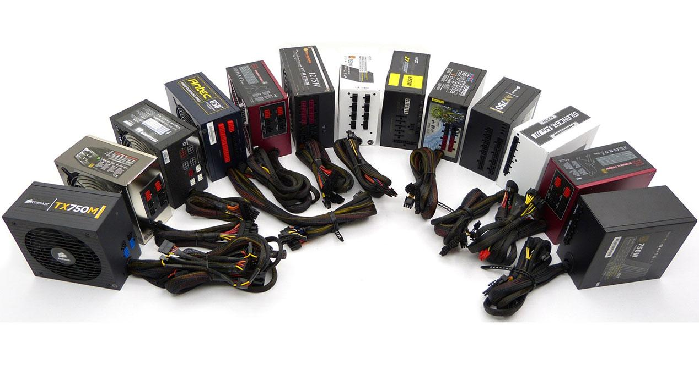
El negocio de proveer servicios de datos es mucho más complejo que la forma enla que se dan los
tradicionales servicios, que con frecuencia se terminaninvolucrando o necesitando la colaboración de
terceras empresas.
1.-Desarrollo de nuevos mercados y productos
2.-Adquisición y administración de clientes
3.-Proveer y desarrollar servicios para la red
4.-Administración del negocio
Definitivamente, la tecnología en general ha sido la causa principal y la acciónmás directa para la transformación del trabajo de las organizaciones en laposguerra del siglo XX. Tanto los bienes de capital «duros» (computadores,teléfonos, videos, facsímiles, grabadoras, etc.), como los programas y sistemasde información y comunicación en general, han incrementado enormemente laproductividad y eficiencia de las organizaciones. Tenemos como ejemplos lossiguientes: bases de datos en redes de todo orden y topología, sistemas dereservaciones en aerolíneas, sistemas de contabilidad y nóminas, archivosclínicos en centros de salud, sistemas de conmutación electrónica y un sinnúmero de otras aplicaciones a procesos administrativos.
La industrialización de los servicios de tecnología de información va a redefinir el mercado en términos de
como las organizaciones evalúan, compran y seleccionan los servicios y como los vendedores desarrollan y
establecen precios de los servicios.
Para lograr esta estandarización, se requiere un enfoque hacia las
soluciones genéricas y esto debe ser responsabilidad de los proveedores, que deben dedesarrollar, operar y
administrar el resultado de estos genéricos de TI.
Aunque el servicios de TI están en proceso de
madurez, la
madurez de la industria se ha incrementado en aspectos evidentes, como la forma en que los servicios son
implementados y administrados.
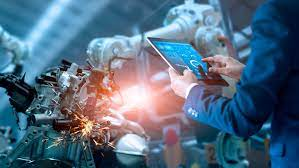
El desarrollo de estas tecnologías y de las telecomunicaciones ha hecho que los intercambios de datos crezcan
a niveles extraordinarios, simplificándose cada vez más y creando nuevas formas de comercio, y en este marco
se desarrolla el Comercio Electrónico.
Comercio Electrónico
Se considera “Comercio Electrónico” al conjunto de aquellas
transaccionescomerciales y financieras realizadas a través del procesamiento y la transmisión de información,
incluyendo texto, sonido e imagen.